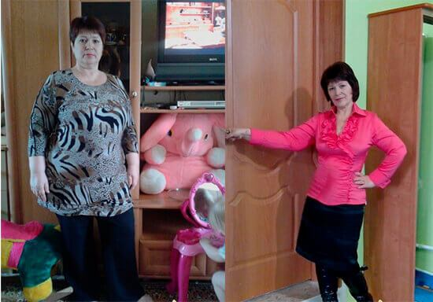
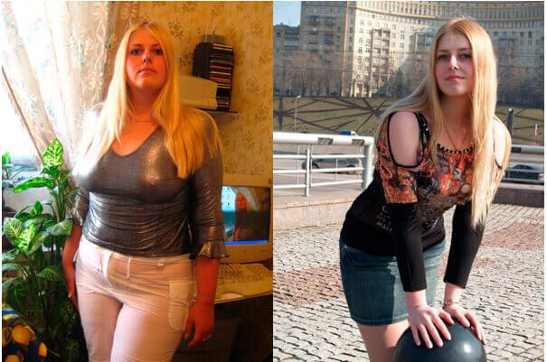
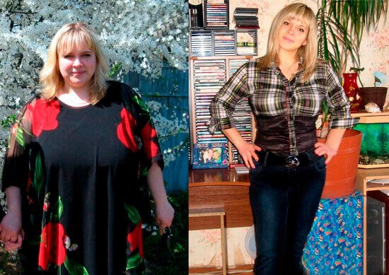
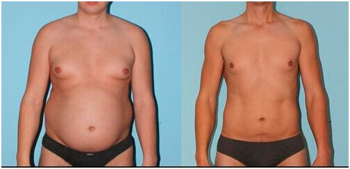
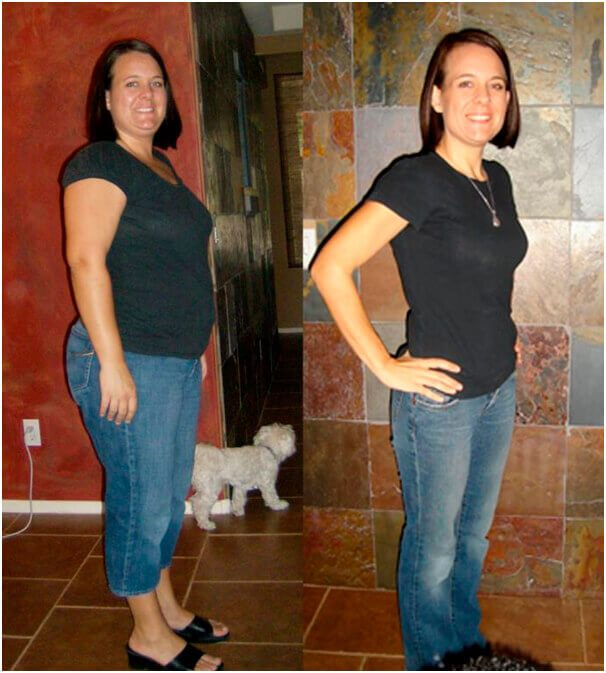
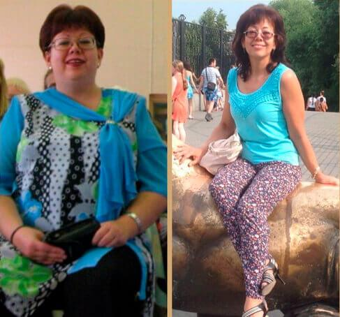
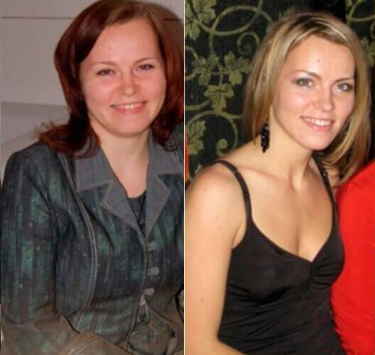
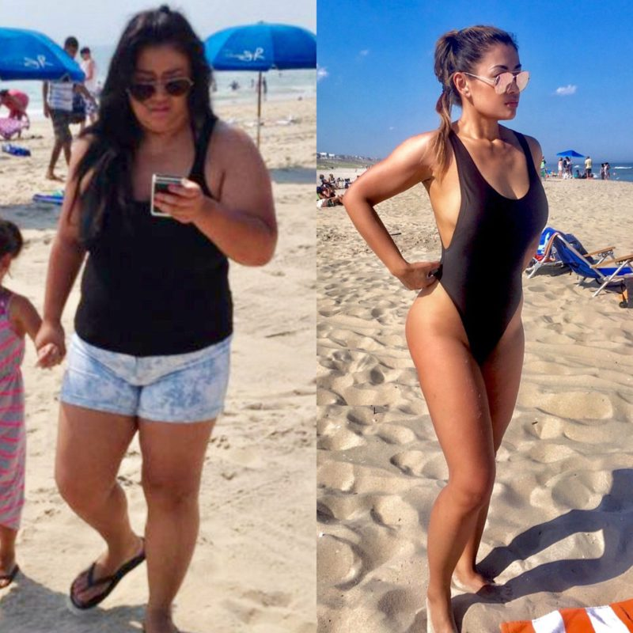

L'offre spéciale pour les résidents de France a été prolongée jusqu'au 16 Juin21 Mai inclus!
Docteur Michel Cymes, endocrinologue, nutritionniste, titulaire d'un diplôme en médecine à l'Institut des sciences de la nutrition, France parle de son expérience.
Des régimes, des exercices, des comprimés et la lipoplastie sont des méthodes modernes utilisées pour lutter contre le surpoids. Cependant, le nombre de personnes en surcharge pondérale ne cesse d'augmenter. Donc, aucune de ces méthodes n'est vraiment efficace.
Michel Cymes
La situation a changé avec l’apparition d'un produit minceur stimulant la perte de poids de manière naturelle. Mais prenons les choses dans l’ordre.
Des célébrités et non seulement françaises, mais aussi à l’échelle mondiale lui confient leur forme et leur santé.
Laurence Boccolini
Evelyne Thomas
Loana
Pourquoi le surpoids est-il si dangereux?
Des maladies cardiaques, telles que l'hypertension artérielle, les maladies coronariennes, les accidents vasculaires cérébraux et les crises cardiaques occupent la première place au monde en termes de décès comme une des conséquences de l’obésité. Elles tuent près de 20 millions de personnes chaque année.
Le diabète est classé en deuxième position, en 2018 cette maladie est devenue une épidémie mondiale. Selon les données de l'OMS, le taux de mortalité due au diabète a augmenté de 52% au cours des 10 dernières années.
L'analyse de la fréquence des maladies montre que 97% de personnes qui sont mortes avant 50 ans avaient des problèmes de surpoids!
Le surpoids est causé par des troubles métaboliques.
On sait que certains gens peuvent manger une quantité de nourriture assez conséquente et rester mince pour autant. Tandis que d’autres grossissent malgré les régimes et le sport. Les recherches les plus récentes confirment que la différence en termes de métabolisme en est la raison. À savoir, chez les personnes en surpoids les problèmes d’ordre métabolique sont très fréquents.
Pourquoi beaucoup de gens n’arrivent pas à perdre du poids en suivant un régime?
Lorsqu’on se met au régime, l’organisme reçoit moins de calories. Moins de calories est synonyme de « famine » pour l’organisme, d’où la réaction de défense contre « une mort potentielle », (pendant des millénaires d’évolution de l’humanité, l’organisme humain a développé des réactions particulières le protégeant de la famine). L’organisme commence à économiser autant d'énergie que possible sous forme de dépôts de graisse pour vous protéger d’une « mort potentielle» et s'efforce de dépenser le moins d'énergie possible. On devient lent et léthargique avec un niveau d’activité en baisse. C’est une réaction normale de défense de notre organisme .
Pourquoi les exercices physiques ne font-ils pas maigrir?
Voici comment l’organisme dépense de l'énergie reçu avec de la nourriture:
Cerveau 20.4%
Coeur 7.3%
Le foie 27.4%
Rein 7.6%
Autres organes 26.9%
Muscle 10.4%
Comme vous le voyez, juste une petite partie de l'énergie est dépensée par les muscles.
Ainsi, si vous essayez de brûler des graisses à l'aide des exercices physiques, il
faudra travailler dur car l’organisme est conçu de façon à dépenser une quantité minime
d'énergie pour assurer le travail des muscles.
Sinon, on ne pourrait plus bouger après 24 heures de jeûne, on n'aurait tout simplement
pas d'énergie pour cela. Cependant, les gens sont capables de survivre longtemps sans
nourriture. Les 7 à 10 jours passés sans manger ne mettent pas en danger la santé
humaine. Le livre du Guinness contient le record de 102 jours sans manger. C’est
pourquoi dans la plupart des cas, les exercices physiques n’apportent pas de résultats
escomptés.
Y A-T-IL UNE SOLUTION?
Un produit minceur très efficace a été créé sur la base des derniers progrès scientifiques réalisés aux États-Unis, par l'Institute of Nutritional Science. Ce produit est disponible sur le marché américain et dans un certain nombre de pays. Ce mois-ci, une quantité conséquente a été mise à disposition pour la France!
{offer_name} est une approche minceur très innovante basée sur des composants naturels. Grâce à ces ingrédients choisis et proprement formulés, le produit pénètre profondément dans l’organisme simultanément avec des aliments que la personne mange d’habitude et cible les dépôts de graisse tout en normalisant le métabolisme. Ainsi, les dépôts graisseux disparaissent naturellement.
Qu'est-ce que {offer_name}?
La formule du produit minceur {offer_name} contient des antioxydants déclenchants le processus de brûlure de graisse dans l’organisme humain. Il s’agit de la catéchine, un puissant antioxydant qui normalise le métabolisme et améliore le fonctionnement du système endocrinien pour brûler la graisse de manière naturelle.
De plus, {offer_name} permet de synthétiser le glycogène qui est responsable d’envoyer le message « Je n’ai plus faim » à notre cerveau. On a donc moins souvent faim. La sensation de la faim devient donc moins intense.
L’approche minceur {offer_name} est absolument naturelle. Le produit stimule les processus naturels qui ont lieu dans l’organisme humain. Étant donné que les graisses brûlent suite à un métabolisme accéléré, suivre un régime n'est pas nécessaire. Pour maintenir un bon métabolisme, il faut juste avoir une alimentation équilibrée, sans qu’aucun effort physique ne soit nécessaire.
Les principales caractéristiques de {offer_name}:
- Brûle la graisse viscérale et abdominale (sous-cutanée)
- Améliore le métabolisme et le travail du système endocrinien
- Diminue l'appétit pendant la prise du produit
Grâce à un métabolisme accéléré, les gens qui prennent du {offer_name} sont capables de brûler jusqu'à 500 g de graisses par jour! {offer_name} est efficace même si l’excès de poids est causé par un déséquilibre hormonal. Si vous êtes sujet à l’obésité, ce produit de perte de poids est fait pour vous!
Ce supplément a été mis sur le marché relativement récemment, mais il a déjà réussi à se faire une réputation d’un produit minceur préféré chez les professeurs de ballet, de danse et de sport car il permet de perdre du poids rapidement et de maintenir un faible pourcentage de graisse corporelle sans perdre de l'énergie et de l'endurance.
Résultats après 47 jours de prise de {offer_name}
Résultats après 19 jours de prise de {offer_name}
Résultats après 37 jours de prise de {offer_name}
L’avis de l’expert et le résultat de recherche au laboratoire
Dr Dominique-Adèle CASSUTO
Nutritionniste, endocrinologue.
Endocrinologue à l'Institut National de Recherche Médicale depuis 1993.
Titulaire d'un doctorat en médecine, Faculté de Rennes.
Expérience professionnelle: 19 ans.
Quand on décide de perdre du poids il est extrêmement important de ne pas nuire à son propre organisme. Malheureusement, ce n’est pas le cas de la plupart des méthodes de perte de poids populaires. On ne peut pas être au régime tout le temps, sans parler que rares sont celles et ceux qui peuvent s'y tenir. Déçus et n’ayant pas atteint leur objectif, les gens recommencent à prendre des comprimés, dont la plupart sont nuisibles à l’organisme , provoquant un déséquilibre hormonal, des troubles du système immunitaire et du foie. Il fait maigrir de façon naturelle, sans mettre en péril le fonctionnement interne de l’organisme. Aujourd'hui, {offer_name} est la seule approche minceur répondant à ces exigences. Ces substances favorisant la perte de poids accélèrent le métabolisme et la combustion des graisses pas moins de 10 fois. Je suis certaine que ce produit amaigrissant est la meilleure chose qui existe sur le marché de la nutrition moderne. C'est aussi un produit approuvé auquel on peut faire confiance.
Les essais au laboratoire
Un groupe de volontaires (297 personnes) en surpoids, ont pris du {offer_name} tous les jours pendant un mois sans changer leur régime alimentaire habituel. Voici leurs résultats:
1. Réduction de la masse graisseuse de 12 à 15 kg.
- 15 kg - 95% des cas
- 12 kg - 100% des cas
*Dans ce cas précis, la perte de la masse graisseuse signifie la perte sans accumulation ultérieure pendant un mois.
2. Amélioration significative du métabolisme.
3. Augmentation du niveau d'énergie et d'activité physique.
4. Amélioration du fonctionnement du foie et du système endocrinien.
L’efficacité de {offer_name} dans le cas de l'accélération du
métabolisme et la combustion des graisses a été prouvée. {offer_name} est recommandé aux gens en surpoids,
avec des problèmes du métabolisme et le diabète.
La comparaison entre des méthodes de perte de poids:
| Options de comparaison | Régimes | Exercice physique. | Liposuccion | {offer_name} |
| Mécanisme | À cause du manque de nutriments, le corps commence à se digérer soi-même pour maintenir la glycémie et principalement pour assurer la fonction cérébrale. | En raison de l'effort physique, les dépôts de graisse commencent à se transformer en énergie, tout en libérant de l'eau. | Élimination physique de la graisse corporelle de la cavité abdominale et d'autres zones à problèmes sous anesthésie générale | La normalisation du métabolisme, le corps se débarrasse de l'excès de poids tout seul. |
| Effet sur la santé | Le risque de gastrite et d'ulcères augmente et aggrave le trouble métabolique, un corps affaibli ne peut même pas faire face à un rhume. | Un effet positif de manière générale, mais il existe un risque de blessure aux articulations du genou sur le tapis roulant chez les personnes en surpoids. | Le risque d'anesthésie, le risque de complications après la chirurgie, le temps de resserrer les sutures, la douleur, l'utilisation d'antibiotiques | Le produit minceur ne contient que les ingrédients naturels qui ont un impact positif sur la santé. |
| Prix | L’achat des aliments diététiques pendant des mois. | Les frais de l'abonnement à la salle de gym, l’achat de survêtements et de chaussures appropriées, besoin du temps libre | Paiement pour la chirurgie, paiement des médicaments pour la période postopératoire | Promo «{offer_name} avec jusqu'à 60% de réduction» |
Comment recevoir le produit de perte de poids {offer_name} à prix réduit?
L'offre spéciale "{offer_name} avec jusqu'à 60% de réduction" touche à
sa fin. Le lot envoyé par l'Institut des sciences nutritionnelles est presque
épuisé. Le produit reste disponible dans la région Nouvelle Aquitaine car il y a été
mis à disposition plus tard comparé à d’autres régions.
NOTE DE LA RÉDACTION : Les fournisseurs officiels de {offer_name}™ ont accepté de offrir une remise importante exclusivement à nos lecteurs pour une période limitée.
(PRODUIT DE RÉDUCTION LIMITÉE VENDU TOUS LES JOURS - RÉCLAMER LE VÔTRE MAINTENANT AVANT QU'ILS PARTENT TOUS)
IMPORTANT : Au cours des essais cliniques, il a été prouvé que vous DEVEZ utiliser ce produit QUOTIDIENNEMENT pour obtenir des résultats similaires.
Mise à jour : Il n'y a que 2 packages de réduction disponibles. Fin de l'énorme promotion Discount：
Ne t'en fais pas!
Nos coursiers changent de masque et de gants toutes les 2 heures. Le processus de livraison et de paiement passe sans contact.
AVEC UNE REMISE
DE 60%
Cette offre spéciale prend fin :
Chère Diana, n’abusez surtout pas car ce produit est très puissant, vous pouvez perdre jusqu'à 20 kilos au lieu de 12.
J'ai réussi à perdre 31 kg. Je pesais 94 kg. Je me souviens à quel point c'était
difficile au tout début, que de doutes et de peurs. J’étais pas sûre que ce
produit marche. C'est difficile quand personne ne vous soutient, surtout quand
on est vraiment gros, mais {offer_name} a réussi à brûler tous ces kilos ...
Je suis presqu’à la de la retraite, je ne m'attendais pas à un tel résultat!

Les filles, n’écoutez pas ceux qui vous disent que vous n’y arriverez jamais.
J'ai réussi malgré mes 3 grossesses. Vous pouvez perdre davantage de poids. Je
recommande {offer_name} à tout le monde, c'est le seul
produit qui a marché dans mon cas.
L'offre spéciale est terminée dans ma ville, mais ma copine a acheté plusieurs
paquets et m’en a donné. Je peux pas dire que mon résultat est stable car je
prends le {offer_name} depuis seulement une semaine. Mais
j'ai tout de même perdu 3 kg les 7 premiers jours, il me reste plus que 18 kg à
perdre! Je vais y arriver! Je n’ai aucun doute là-dessus :)
Salut tout le monde, j'ai essayé ce {offer_name}, mais je n'ai perdu que 4 kg en un mois :(
Anne, avez-vous lu correctement la notice ? (voir le mode d’emploi d’utilisation), lisez attentivement encore une fois et prenez le produit minceur en suivant ces conseils!
Salut! J'ai perdu 41 kg en 2 mois avec {offer_name}, c’était il y a un moment mais mon poids reste stable! Voici ma photo:

Moi aussi j’ai réussi à maigrir! Bonne chance à toutes, je garde les doigts croisés pour vous!
J’ai de os lourds, mais {offer_name} m’a vraiment aidée, la différence avant-après est énorme. Je ne m'attendais pas à pouvoir perdre près de 40 kg (je n'en ai perdu que 37 kg jusqu'à présent) à mon âge c’est génial. Je me sens bien! Cette solution est idéale pour des gens comme moi! Je recommande vivement d’essayer {offer_name}! Voici mes résultats:

Avant de commencer {offer_name}, je pesais 90 kg. J'étais mince quand j'étais jeune, mais j'ai progressivement pris du ventre et des poignées d'amour. À 35 ans, j'ai réalisé qu'il était temps de faire quelque chose. J'ai passé près d'un an à faire du sport, mais je n'ai pas pu retrouver la forme d’autrefois. Ensuite, j'ai ajouté du {offer_name} à mon alimentation et j’étais transformé en quelques semaines littéralement. Maintenant, je prends soin de moi et de ma forme. J'ai toujours du {offer_name} en réserve.

{offer_name} m'a sauvé la vie. Il y a plusieurs années, j’ai eu un accident de voiture suite à quoi je suis resté immobile pendant 8 mois. J'ai pris 32 kg en étant alitée! J'ai progressivement commencé à marcher avec une canne, mais le sport était hors de question, j'étais trop faible, mon poids rendait la chose encore plus compliquée. J'ai essayé {offer_name} pour la première fois grâce à une amie qui m’en a donné deux paquets en cadeau. Je ne m’atendais pas vraiment à grand-chose, mais j’ai décidé d’essayer. Je l'ai pris 3 fois par jour. J'ai remarqué les premiers changements en une semaine. Je ne peux pas dire que j'ai perdu beaucoup, mais j'avais l'impression que mon l’organisme marchait mieux, la digestion s’est améliorée aussi. J'ai senti que mon métabolisme a accéléré. J'ai perdu 4 kg les 2 premières semaines sans rien changer à mon style de vie! J'ai perdu 26 kilos de plus en 3 mois environ. Je suis très contente et je me considère très chanceuse. Je ne sais pas ce que je serais sans mon amie, je pèserais certainement toujours 89 kg.

Si vous avez pris du poids après l'accouchement, il faut maigrir de toute urgence. Faites du tapis roulant pendant quelques heures. Ceci dit, j'ai entendu dire que c'était assez mauvais pour les articulations car c’est comme sauter, les articulations risquent de ne pas tenir le coup. L'autre option serait de prendre du {offer_name}, comme je l'ai fait moi-même. Il m’a aidé à maigrir facilement. Regardez mes photos ci-dessous! Je ne m’arrête pas là ;)

Avez-vous essayé de ne pas vous empiffrer? Ok, quand on est enfant, on mange ce qu’il y a dans l’assiette. Mais quand on est une femme adulte, ne pouvez-vous pas simplement vous contrôler et de manger moins?
Pour votre information, certaines personnes sont génétiquement sujettes à l’obésité, sans qu’aucun régime alimentaire et aucun médicament n’y fassent rien. Vous avez de la chance si ce n'est pas votre cas, mais croyez-moi, tout le monde n'a pas cette chance.
Marianne, je mange à peine mais mon poids ne bouge pas, je n’arrive pas à maigrir
Je suis surprise par les propos comme quoi seuls les nutritionnistes connaissent {offer_name} ! J'ai perdu près de 30 kg après avoir fait une seule cure de {offer_name}, de très gros changements, de gros changements, permettez-moi le jeu de mots. Bien sûr, je ne me bourre pas de gâteaux, mais je ne me limite pas non plus quant à tout le reste. Je mange des patates si j’ai envie des patates. REGARDEZ LA PHOTO AVANT ET APRÈS

Pourquoi mettre tous sous la même enseigne? Pourquoi tout le monde devrait être mince? Quant à moi, je pèse 79 kg alors que je mesure 167 cm et je n’ai pas honte. J'adore mon look et je me sens bien!
Malika, les tendances et la mode du 21e siècle poussent les filles à l'extrême et elles veulent ressemblent à des mannequins. En règle générale, ces extrêmes affectent leur santé. C'est pourquoi nous avons créé un produit minceur qui peut aider à perdre du poids sans nuire à votre santé.

LES FILLES, IL FAUT QUE JE PERDE 9 KG À TOUT PRIX!!!!!!!!!! Je suis restée à la maison pendant six mois et j’ai pris du poids sans réaliser. QUE DOIS-JE FAIRE? SOS !! LES RÉGIMES C’EST PAS POUR MOI, J'AI NI LA VOLONTÉ NI PATIENCE. J’ARRÊTE LE RÉGIMES ET JE PRENDS MÊME PLUS DE POIDS. JE NE SUIS PAS FAITE POUR LA GYM, C’EST TROP MONOTONE ET JE SUIS TROP PARESSEUSE …………………………………………
Manon, la paresse n'est pas la meilleure qualité, mais vous avez de la chance car {offer_name} est exactement ce dont vous avez besoin.
Est-ce que le site officiel du fabricant est le seul endroit où on peut acheter du {offer_name} ou il est aussi vendu dans d'autres boutiques en ligne?
Véro, malheureusement c'est le seul endroit. Les pharmacies veulent faire de l'argent sur les problèmes des gens alors que nous essayons de les aider à résoudre leurs problèmes de santé. Ils n’ont pas accepté de le vendre à zéro marge. Nous avons donc dû demander le soutien du gouvernement, et l'Institut nous a soutenus en payant une grosse commande. Maintenant, nous pouvons fournir une quantité limitée de {offer_name} avec des remises importantes.
Ma femme est en lutte permanente contre le surpoids. Quand nous nous sommes mariés, elle ne pesait que 53 kg, et maintenant elle pèse 68. Le pire c'est qu’elle ne voit pas de problème. On s’habitue à son poids et on a l’impression que c’était toujours ainsi.
Serge, c'est vrai ce que vous dites. Et si vous n’êtes pas d’accord vous pouvez lui suggérer d’utiliser du {offer_name}. D’accord, ce n’est pas très sympa, mais votre femme sera surprise par la facilité avec laquelle elle aura perdu du poids. {offer_name} fonctionne aussi bien comme supplément.


Anna, je recommande les cures, en effet. L’effet durera longtemps. Il est également important de garder une alimentation équilibrée.
JE PÈSE 97 KG, JE NE SAIS PAS COMMENT FAIRE, CELA ME FAIT PEUR D’ATTEINDRE LES 100 KG. QUE DOIS-JE FAIRE ??? AIDEZ-MOI !!! PUIS-JE ACHETER CE {offer_name} DANS UNE PARAPHARMACIE?????
Angélique, vous pouvez essayer, mais j'ai réussi à le trouver uniquement sur le site officiel du fabricant, c’est également plus fiable de le commander depuis chez eux.
Angélique, pas de panique. Votre situation n’est pas désespérée. Ceci dit, malheureusement, vous ne trouverez pas {offer_name} dans une pharmacie, j'ai déjà expliqué la raison dans un de mes commentaires. Il faut commander du {offer_name} et le prendre en suivant strictement le mode d’emploi, je le répète, À PRENDRE STRICTEMENT EN SUIVANT LE MODE D’EMPLOI, si vous voulez arriver à un résultat souhaité.
Bonjour, je suis maman de deux enfants et j'essaie de perdre du poids depuis aussi longtemps que je me souvienne. Je n’arrive pas à suivre un régime, je craque quelques jours après et je me bourre de nourriture. Je n'ai pas de temps pour le sport. J'ai lu cet article et je brûle d’envie de l'essayer, mais je ne comprends pas bien comment le prendre (par exemple, dois-je l'ajouter à autre chose ou dois-je le prendre tel quel?). Y a-t-il un mode d’emploi inclus? Ou peut-être une recette? N'est-il pas dangereux quand on arrête d’en prendre? SVP, répondez à mes questions ou dites-moi où je peux en lire plus. Merci par avance.
Bonjour, j'ai 50 ans et je veux vraiment maigrir. Je sais bien qu’à mon âge
c'est plus difficile, mais j'ai quand même essayé. J'ai décidé de commander du
{offer_name}. L'effet m'a surprise quelques semaines plus tard! J'ai perdu 16
kg !!! Bien sûr, je mangé sain et j'ai essayé de faire du sport, mais de toute
façon, je ne m'attendais pas à un tel résultat. Merci pour cet article. Achetez
du {offer_name} uniquement sur le site officiel
également.

J’ai eu beaucoup de chance de découvrir cet article. Je n’espérais plus redevenir mince. J'ai commencé à prendre du {offer_name} il y a à peine une semaine. Je mange la même chose qu'auparavant, mais maintenant je mange moins. Mon grand appétit a disparu, je ne veux plus grignoter en permanence. Je ne sais pas qui a eu l'idée de ce produit, mais je remercie cette personne de tout cœur.
C'est génial quand vous avez envie de quelque chose mais vous croyez que c'est presque impossible, et puis vlan, comme par miracle ça marche. J'ai déjà perdu 10 kg et je continue. Mes amis sont surpris, ils pensent que je suis au régime le plus strict, ils sont inquiets pour moi. Mais je ne leur dis rien, je les laisse deviner :)
Marie-Line, pas la peine de nous remercier, nous faisons de notre mieux pour la santé des citoyens.
Dites-moi s'il vous plaît où l’acheter? Ce produit n'est pas vendu dans les pharmacies. Je ne veux pas acheter de faux car cela ne marchera pas.
Je le répète une fois de plus, commandez {offer_name} UNIQUEMENT sur le site officiel du fabricant. Pour éviter des erreurs, cliquez sur le bouton ci-dessous « Commander maintenant »! Vous pouvez toujours recevoir {offer_name} avec une remise importante dans le cadre du programme lancé par l'Institut des sciences de la nutrition, alors dépêchez-vous de le commander. Méfiez-vous des contrefaçons.
J’y crois pas! Je l'ai acheté avec 75% de réduc ! Je vais l’essayer et je vais partager mes résultats. Je rentre à la fac cette année, je veux commencer une nouvelle vie avec une nouvelle forme. J'en ai marre d’être traitée de grosse. Tout le monde se moquait de moi à l'école. Maintenant, je vais perdre une douzaine de kilos et c’est moi qui serai la plus belle!